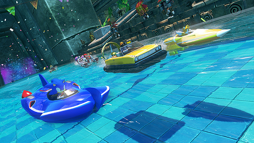
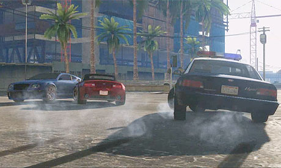
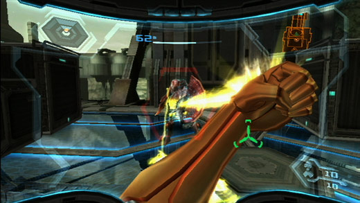
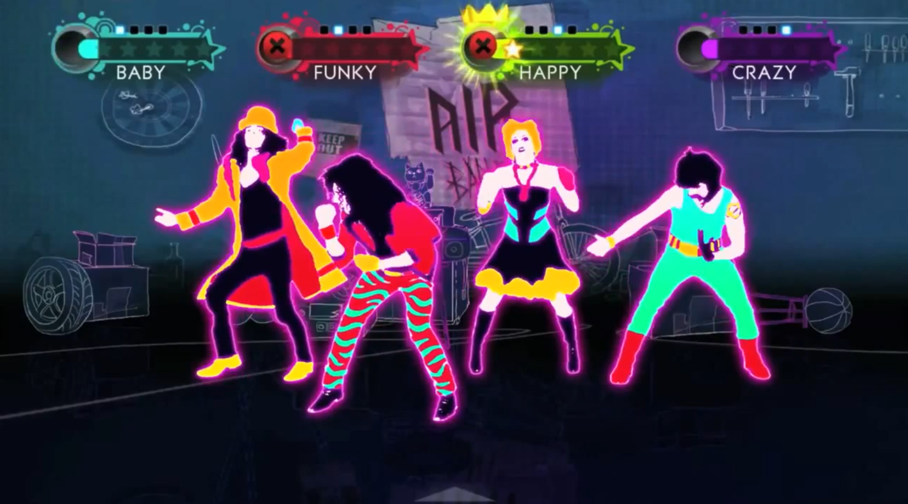

![Amazing Spider-Man Finale Features New [SPOILER] Costume](../../../../../../assets1.ignimgs.com/2018/06/01/untitled-br-1527892808294_small.jpg)
Feast your eyes on 100 tasty Wii U rumors before E3!
With E3 coming up in just a few days and Nintendo expecting to do a massive Wii U blow-out, I think it's time to go back and listen too ALL the wacky rumors we've heard in the past nine months. Yup, that's right. ALL OF THEM. After days of research and scavenger hunts, I've managed to dig up 100 different rumors that have popped up since the Wii U's announcement last E3, many of which have since been denied, others not been commented on, and even more still hanging out there awaiting confirmation. So ignore all of reality, sit back and relax, and enjoy all of these wonderful rumors, most of which will probably never ever come true. That said, we don't officially know what's hovering around the Wii U quite yet, so.... are these rumors finally going to be revealed at E3 this year? Or are they just all the more reason to never trust the internet? Read on guys, and see for yourself.
Massive list of Wii U rumors prior to E3 2012:
- Wii U to not feature hard-drive, instead to sport
8GB flash memory.
- Wii U to feature "HD" virtual console, select "classic" games to be re-mastered in HD.
- Nintendo to allow select GameCube titles to "be downloaded from WiiWare" onto Wii U, comes from NintendoGal interview with Amber McCollom, E&T director at NoA.
- Project Offset to be revived as Wii U exclusive, I.P. picked up by Nintendo.
- Mass Effect 3 being developed for "Next-Gen System", possibly hinting Wii U release.
- Wii U-specific Sonic the Hedgehog game in the works, will be spin-off of main line series, SEGA has since denied "Sonic Dimensions" specific game speculation for Wii U, but says Wii U is still very "applicable to Sonic".
- Dead Space being developed for "unannounced console" alongside PS3 and X360, possibility of Wii U release, game confirmed to release in 2012-2013 fiscal year, most likely Dead Space 3 (see rumor #24 for more on Dead Space).
- The Darkness II being planned for Wii U, no further details given.

- Wii U to support two tablet controller support, Nintendo feels that it's "absolutely necessary".
- EA and Valve competing to become "main service" for Wii U's online system.
- Ubisoft working on "AAA MMO Title", speculated to be for Wii U.
- Final Fantasy XV to be officially announced for Wii U (see rumor #86 for more on Final Fantasy).
- Wii U's online store to be a "fully featured app store", includes digital distribution of eBooks and YouTube app (see rumor #81 for more on eBooks)
- Project Ogre to land on Wii U, developed by Kojima Productions.
- Sonic and SEGA All-Star Racing Transformed to be released on Wii U, also developed by Sumo Digital.

- Wii U's Nintendo Network feature to be configurable online with web browser, to feature "new feature that haven't been used before by Nintendo", rivals PSN and XBL.
- Rocksteady working on TMNT game for Wii U, to be in the style of Batman: Arkham City, Rocksteady has since denied this rumor, but continues to work on "next-gen platforms".
- Star Trek game to be released on “all major home consoles and PC”, possibly hinting Wii U release (Star Trek to be released in 2013).
- Nintendo considering name change for Wii U, having trouble conveying message to consumers.
- IO Interactive to bring Hitman: Absolution to Wii U, being developed alongside PS3, X360, and PC versions.
- Junction Point to "implement Wii U support for Epic Mickey 2", unsure to be Wii U SKU or enhanced emulation (tablet support).
- Activision to support Nintendo "greater that before", developing launch title for Wii U (Call of Duty: Black Ops 2?)
- 5th Cell working on unannounced Wii U title, to be Wii U launch title.
- Wii U to see release of TimeSplitters 4, Overstrike, new Dead Space, TimeSplitters 4 since been denied in development by Crytek, Dead Space 3 officially confirmed for E3 2012 showing.

- THQ reportedly working on 2 unannounced Wii U games, one of which possibly uDraw-related.
- Nintendo working with MySpace to bring "MySpace TV" app to Wii U, MySpace TV has since been confirmed to exist, no information on Wii U version (or its specific existence).
- Anonymous Japanese source claims Wii U to launch at $299, Nintendo has no plans to announce Wii U price at E3 2012.
- Medal of Honor: Warfighter coming to Wii U, reported by Austrian newspaper Der Standard.
- Nintendo Gamer magazine speculates on Bioshock Infinite's port to Wii U, says is "likely", Vicarious Visions confirmed to be working on Wii U game, delayed PS3, X360 versions of the game to 2013.

- Darkstalkers 4 rumored to be in development, to be released on Wii U, PS3, and X360, according to Venture Beat.
- Ubisoft working on a "card" game for Wii U, set to be Wii U launch title.
- Nintendo tweaking dev kits to make room for Unreal Engine 4.
- Nintendo to show ten to eleven Nintendo-published retail titles for Wii U at E3 2012, three new Nintendo I.P.'s to be revealed.
- Nintendo to price Wii U "lower than they want to", looking forward to magnify momentum during holiday season.
- Ubisoft working on "Lady Gaga: The Experience" for Wii U, according to Dual Pixels.
- Wii U to support 720p as "sweet spot" resolution with tablet controller use, tablet controller screen to handle 480p, simpler games to handle 1080p at ease.
- Massive Wii U eShop games list (all rumored, none confirmed), includes listing for World of Warcraft and Phantasy Star Online, see list here.
- Capcom to make showing at Wii U show floor at E3 2012, categorized under "action".
- Wii U uses Wii's USB-Ethernet adaptor for profiling, basic pipeline similar to X360.
- Grand Theft Auto V to be released on Wii U, to be delayed across all consoles for Wii U support, says analyst.

- Wii U to launch on November 18th in North America, in Japan the week after, according to Japanese source, Nintendo has no plans to announce Wii U launch date at E3 2012.
- Lucid developing Gran Turismo-style racing game for Wii U entitled "Concept Grand Prix", to feature "extremely realistic physics", focuses on community features, to compete with Forza and Gran Turismo, more details at E3 2012.
- LucusArts creating MMO for Wii U, according to E3 2012 floor listings (Star Wars: The Old Republic?).
- Toki Tori 2 for Wii U to feature "Steam Cloud support", Two Tribes claims idea to be only a follower suggestion, neither confirms nor denies such feature.
- Gaijin Games have possession of Wii U dev kit, teases Wii U version of Runner 2 on multiple occasions, rumored to currently be in development.

- Nintendo discussing the use of "haptic feedback technology" (a special kind of rumble) to be implemented on Wii U controller, not yet official.
- Wii U tablet controller camera to feature facial recognition, movie recording, motion tracking (head/eyes), video chat, to support DRC camera.
- James Bond license being used for upcoming Wii U game, no further details given.
- Nintendo making deals with content companies to provide entertainment/content for Wii U, according to Adweek.
- Pikmin 3 is "almost finished", possibly a Wii U launch title, to be shown at E3 2012.
- Nintendo teaming up with Epic Games to create Metroid for Wii U, to run on Unreal Engine 3.

- Wii U operating system to be mobile based (Android?).
- Wii U tablet controller wireless range to Wii U base console to expand to multiple rooms, even multiple floors.
- Wii U tablet controller to feature "Gamer Card" feature, to feature StreetPass that allows the transfer of activity and profile, "comparable to Pokémon's pedometer", to feature built-in screen, able to connect to Nintendo Network.
- "Unnamed source" claims Wii U to cost $180 to manufacture, of which $50 to make tablet controller.
- MonolithSoft working on Wii U project, no further details given.
- Wii U to have some sort of "dock" (charging dock?), according to Nintendo patent.
- Wii U launch line-up to be "pretty damn good", according to GameTrailer's Shane Shatterfield.
- SEGA working on unannounced downloadable Wii U game, also for PSN, XBLA, and PC.
- Call of Duty: Black Ops 2 to be announced for Wii U, according to GameStop listing.

- Wii U tablet controller to feature "clickable Circle Pads", similar to "click sticks" for PS and Xbox, Wii U Circle Pads has since been raised several millimeters above tablet controller.
- Wii U tablet controller to feature "analog triggers", similar to GameCube.
- Frontier working on project for Wii U (LostWinds?), no further details given.
- Retro working on StarFox game for Wii U, possibly Star Fox x Metroid crossover, game since confirmed to not be at E3, see details here.
- Wii U to have Splinter Cell 6, Rabbids Party Land/Raving Rabbids game, Just Dance 4, much more, according to listing on Blockbuster UK, Blockbuster claims listings to be "speculation" and "placeholders", neither confirms nor denies listing source (see rumor #71 & #80 for more on Splinter Cell; see rumor #67 & #74 for more on Just Dance 4; see rumor #78 for more on Rabbids Party Land).

- Wii U dev kits (version 5) final as of May 7, brings unspecified "good news", "original" and "not necessarily... obvious".
- Ubisoft Reflections working on unannounced Wii U game, set for 2012 release, speculated to be either Driver, Just Dance, or Far Cry related (inferred from studio development history).
- Wii U to come packed-in with free Wiimote, tablet controller to possibly have capacitive touch screen, according to Nintendo patent
- New Wii U controller to feature analog sticks, also re-layout of buttons, as seen in Twitter pic from Q/A tester at Traveller's Tales.
- Nintendo's Tadashi Sugiyama is working on new Wii U game to be shown at E3, previously worked on Ice Climber, F-Zero, and Mario Kart franchises.
- New Splinter Cell game in the works for Wii U and PS3, not mentioned whether it will be SC6 or spin-off, according to HipHopGamer (source has been accurate in the past).

- Wii U to feature cloud storage for save games and profile data, comes via system update in 2013, tied to Nintendo Network profile, to be integrated into Wii U channels, joint development between Mozy Inc. and Nintendo.
- Ubisoft working on free-to-play Wii U game, says analyst, possibly referring to Ghost Recon Online, coincides with job listing at Ubisoft for "AAA online game", to feature purchasable DLC.
- New Nintendo I.P. for Wii U called "Acid Ghost", to be shown at E3 2012, originally was going to be published by Konami on PS3/X360, to feature "dark sense of humor", according to anonymous source at GoNintendo.
- Ubisoft to "continue to grow the [Just Dance] brand with geographical expansion, and new platforms", hinting at possible Wii U release.
- Supposed "insider" claims "something green and white" coming to Wii U, possibly hinting at new Yoshi game.
- Namco Bandai working on new Fooly Cooly game for Wii U, 3DS, according to post on IMDb, to be official sequel of the anime.
- New Castlevania game in the works for Wii U (Castlevania: Lords of Shadow 2?), able to interact with Castlevania: Mirror of Fate game for 3DS, heading also to PS3, X360, and PSVita.

- Ubisoft working on new party game, from LinkedIn profile of Ubisoft employee, employee has history of working on Rabbids franchise, possibly Rabbids party game.
- Wii U to feature game suspension similar to 3DS, also to support multitasking.
- Ubisoft working on Wii U version of Splinter Cell: Blacklist, to be released in 2013 alongside PS3 and X360 versions.
- Evergeek Tech Inc. working on eBook distribution for Wii U, according to LinkedIn profile.
- Square-Enix bringing Kingdom Hearts HD Remix to Wii U, plot connections to KH:3D exclusive to Wii U version.

- Zen Studios working on CastleStorm for "Nintendo digital platforms", possibly hinting at Wii U release, since been confirmed for 3DS eShop, more info to be revealed at E3.
- Blizzard currently working on 2 console projects, one or both for Wii U, possibly Diablo III or Starcraft III, also working on MMO "Project Titans".
- Square Enix to merge Final Fantasy Versus XIII into Final Fantasy XV, to be released on Wii U and
X360PS3 (thanks Uchihataketo).
- "Mario Wii U" to be Wii U launch title, according to Geoff Keighley of GT.TV.
- Nintendo to show Star Fox, F-Zero, Smash Bros. at E3 2012, claims source from Gaming Unwrapped.
- Luigi's Mansion 2 to be announced for Wii U, to be launch title, says UK retailer.
- "Scribblenauts Unlimited" URL registered by WB Games, possibly hinting at Wii U Scribblenauts game based on title and gameplay style, according to Joystiq.

- HBO forming digital partners with Nintendo, to release HBO Go app on "game consoles", Wii U app all but officially confirmed.
- Wii U to have achievement system, to also track gamer time and high scores (thanks BurntGman2).
- Wii U to feature Facebook and Twitter apps, ability to upload screenshots and videos from Wii U.
- Wii U download games to be purchasable by phone, possibly through an application or online service.
- Suda51 to teases No More Heroes 3, currently working on next-gen console, possibly hinting NMH sequel for Wii U (thanks GamingMachine).

- Silicon Knights working on "much requested I.P." for "next-gen consoles", possibly hinting at Eternal Darkness 2 for Wii U (thanks GamingMachine).
- New Tomb Raider game coming to Wii U, according to GameInformer.
- Wii U GamePad to feature "TV button", possibly used to switch between GamePad and TV.
- Wii U to launch at $250 USD, 20000 yen, according to Bloomberg.
- Nintendo working on new game for existing I.P. that "historically hasn't sold well", is not Mario, Zelda, Pokemon, or Battalion Wars, possibly Star Fox.

So guys, what do you think? Are any of these plausible? Or are they just too ridiculous to be true? Any specific ones you like? Ones you hope will never happen? Sound off in the comment section below!